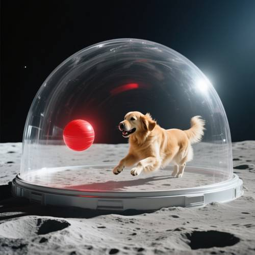
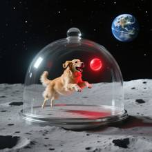

Entity Layout — In the transparent dome base on the lunar surface, a golden retriever
In the transparent dome base on the lunar surface, a golden retriever chases a red ball of light floating in front of it.

Direct — one call, no iterationContinuum — Kimi K3 + Qwen-Image
Judge — Direct
FAILEntity Layout - Three-Dimensional Space — In the image, a solid red ball with a textured surface is depicted floating in the air in front of the golden retriever. The prompt requires a 'red ball of light', but the image shows a solid physical object that is glowing, not an object made of light.
PASSWorld Knowledge — The ground outside the transparent dome is gray, uneven, and covered with craters of various sizes. The background is a black sky with pinpoints of light. This visual representation is consistent with common depictions and knowledge of the lunar surface.
Judge — Continuum
PASSEntity Layout - Three-Dimensional Space — In the image, a red, glowing, spherical object, which can be described as a 'red ball of light', is depicted floating in the air. It is positioned to the right and slightly above the golden retriever's head, directly in front of the dog which appears to be jumping towards it.
PASSWorld Knowledge — The image is set on a grey, cratered ground that is consistent with visual representations of the lunar surface. In the background, the sky is black and filled with stars, and the planet Earth is visible, which confirms the location as being on the Moon.
What the agent did
Thinking
The user wants an image: a transparent dome base on the lunar surface, with a golden retriever chasing a red ball of light floating in front of it. Let me generate this with qwen-image as per the policy. I should write a detailed visual prompt. Key elements: - Transparent dome base on the lunar surface - Lunar surface: gray regolith, craters, black sky with stars, possibly Earth in sky - Golden retriever dog - Chasing a red ball of light (glowing red orb) floating in front of it - Inside the dome presumably (or the dome is the base, dog inside it?) "a golden retriever chases a red ball of light floating in front of it" — inside the transparent dome base. So the dog is inside the dome. The dome is transparent so we can see inside, or we could be inside the dome looking at the dog with lunar landscape visible through the dome. Best composition: view from outside/inside showing the transparent dome on the gray lunar surface, Earth and stars in black sky, and inside the dome a golden retriever mid-chase leaping toward a glowing red orb of light floating in front of it. Let me generate.
Model
I'll generate this scene of a lunar dome base with a golden retriever chasing a glowing red ball.
Step 1 — `generate_image`
{
"prompt": "A transparent glass dome base sitting on the gray lunar surface, seen from outside at a slight angle. Inside the dome, a golden retriever dog is mid-leap, playfully chasing a glowing red ball of light that floats in the air just in front of its open mouth, red glow illuminating the dog's face and the dome floor. The dome is fully transparent with subtle glass reflections and a thin metal frame at its base. Outside: gray cratered moon regolith, sharp black sky filled with stars, planet Earth visible small and blue in the sky. Cinematic lighting, photorealistic, high detail.",
"model": "qwen-image"
}
Result img_0

Thinking
Let me examine the generated image: - Transparent dome on lunar surface ✓ - Golden retriever mid-leap, chasing ✓ - Red glowing ball of light floating in front of the dog ✓ - Red glow illuminating the dog ✓ - Lunar surface with craters ✓ - Black starry sky ✓ - Earth in the sky ✓ - Metal base frame ✓ This looks quite good! The dog is mid-leap toward the red glowing ball, mouth open. The dome is transparent with glass reflections. The composition matches the prompt well. Minor considerations: - The dome looks a bit like a bell jar / cake cover with a knob on top rather than a "base" habitat dome. But it's a transparent dome base on the lunar surface — acceptable interpretation. The metal base gives it a "base" feel. - The dog appears to float inside the dome, which fits low gravity — fine. - The red ball of light looks like a glowing red orb with some line detail — reads as a ball of light. Good. Everything the prompt asks for is present and correct. This is a good result. Per the stopping criteria, "good enough is a stop condition." I'll mark this as best and stop. Actually, let me consider whether the knob on top makes it look like a cake dome rather than a moon base. The prompt says "transparent dome base on the lunar surface" — a base implies a habitat/installation. The current image reads slightly like a glass cloche. But it's still a transparent dome on the lunar surface with a metal base. It's a reasonable depiction. I could try one edit to remove the knob, but risk of destroying a good result... The knob is a small detail. Let me consider: is it "clearly wrong"? Not really — the core elements are all present and correct. The stopping rule says good enough is a stop condition, don't chase marginal improvements. I'll mark img_0 as best and stop.
Model
The generated image matches the prompt well. Let me verify the details: - **Transparent dome base on the lunar surface** ✓ — glass dome with a metal base ring sitting on gray, cratered regolith - **Golden retriever chasing** ✓ — the dog is mid-leap, mouth open, clearly in pursuit - **Red ball of light floating in front of it** ✓ — a glowing red orb hovers just ahead of the dog, casting red light on its face and the dome floor - Bonus atmosphere: starry black sky and Earth in the distance ✓ All requested elements are present and correct, so this is my stop point.
Step 2 — `mark_best`
{
"image": "img_0",
"reason": "All prompt elements present and correct: transparent dome base on cratered lunar surface, golden retriever mid-leap chasing a glowing red ball of light floating in front of it, with starry sky and Earth in the background. Good composition and lighting."
}
Thinking
The image is marked as best. All elements from the prompt are present. I should stop here per the "good enough is a stop condition" rule.
Model
The image is complete and marked as best. It shows exactly what you described: - A **transparent dome base** with a metal foundation ring, resting on the gray, cratered **lunar surface** - Inside, a **golden retriever** captured mid-leap, mouth open in playful pursuit - A **glowing red ball of light** floating just in front of the dog, casting a red glow on its face and the dome floor - The scene is set against a star-filled black sky with Earth visible in the distance The low-gravity float of the dog inside the dome adds a nice touch of lunar physics to the playful chase.